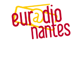
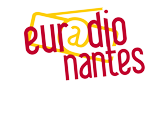

Référence au discours fondateur de Robert Schuman en 1950, le 9 mai est une date historique : c’est la Journée de l’Europe ! C’est aussi le rendez-vous immanquable de la société civile européenne pour les Etats Généraux de l’Europe. Euradionantes vous fait vivre cette journée spéciale ponctuée de nombreux événements.
Élections européennes 201428 pays, 751 eurodéputés, un scrutin le 25 mai et une radio : Euradionantes
Euradionantes vous fait vivre au rythme des élections européennes pendant un mois : vidéos, infographies, reportages, interviews, revue de presse européenne… toute l’info pour mieux comprendre les enjeux du scrutin.
 
